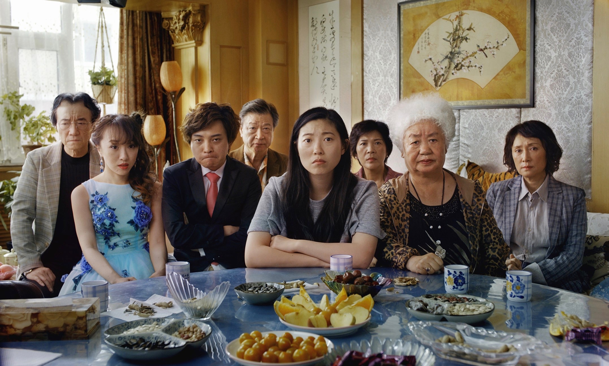
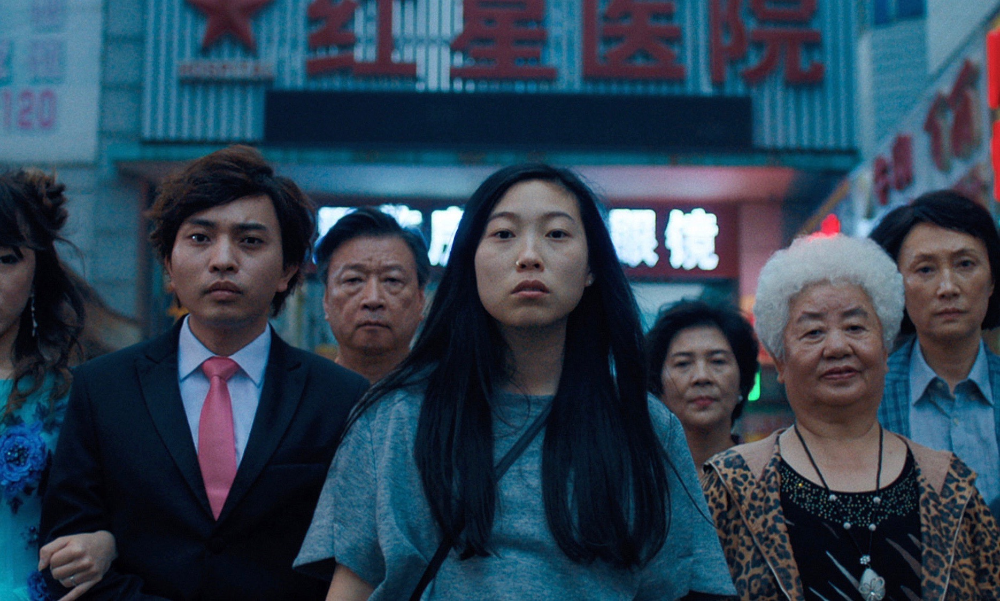
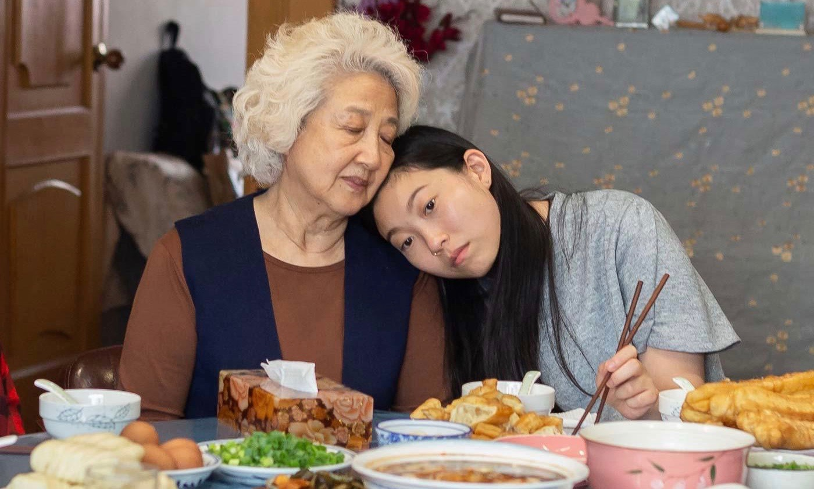
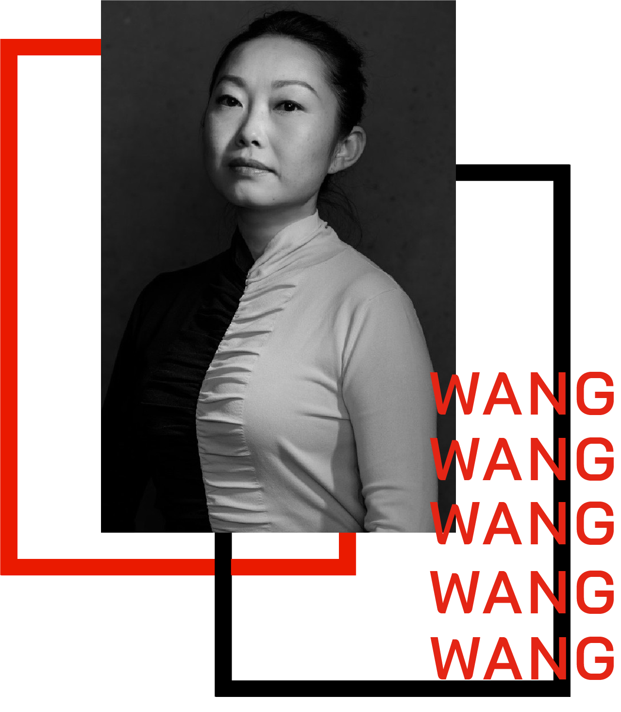

Changchun, the capital of China’s north-eastern Jilin province, has a name that translates to “long spring”. According to folklore, the name was bestowed by an emperor in recognition of its temperate summer. So mild and pleasant was the city at that time of year that it felt as though spring could stretch on endlessly, without ever morphing into the sticky humidity that beset the rest of the country.
It’s easy to imagine idyllic summers there and Lulu Wang recalls her own with glee. “My grandmother had a house with a garden where we would catch dragonflies in the yard,” she says. “It was sort of the iconic childhood.”
The Farewell – Wang’s second feature film after the 2014 art-world satire Posthumous – is also set in Changchun, but here it’s foreign and alienating, as if the city of her memories was merely imagined. Like all of China, it’s modernising at breakneck speed. “Every time I go back, it’s a completely different place, and all the things I once knew are gone,” she says.
Awkwafina (Billi), Shuzhen Zhao (Nai Nai), Tzi Ma (Haiyan), Diana Lin (Lu Jian), Aoi Mizuhara (Aiko), and more ofthe cast in a scene from the A24 movie “The Farewell.” (A24)
This sense of absence permeates the film, which is based on Wang’s own life. Taken literally: absence in the form of grief, as Billi – a Chinese-born, US-raised writer who serves as Wang’s onscreen proxy – returns to Changchun to see her nai nai (Mandarin for grandmother) one last time. Nai Nai is dying, but doesn’t know; in keeping with traditional values of collective over individual suffering, the family keeps her in the dark about her stage-four cancer diagnosis, orchestrating a last-minute wedding as a guise under which everyone reunites. Billi is reluctant to lie but acquiesces – she has no choice when it seems so natural to her relatives.
Absence manifests in other shapes, too. Billi grieves not just for Nai Nai but also for a loss of cultural identity.
“In addition to saying goodbye to grandma, there’s this feeling of sand slipping through your fingers, of being unable to hold on to past memories and feelings – unable to find anything concrete that represents home,” Wang says.
It’s a trauma instantly recognisable to any diaspora – the feeling of suspension between two cultures, and the knowledge that to fully embrace one is to sacrifice the other.
“I think people have this romanticism of the homeland, and that’s just not the reality for me,” Wang says. “Every time I go back to China, I feel more American than ever, so it’s this question of, ‘Well, where is home?’ We’re always searching for it and never fully fitting in.”
Initial talks with production studios only furthered Wang’s sense of displacement. In the US, producers pushed for a comedy of errors, something more marketable than The Farewell’s heady, unsolvable mix of emotions. Meanwhile, Chinese executives couldn’t understand why Billi – and by extension, Wang – felt so conflicted. They wanted a heroine who was less “westernised”, who wasn’t afflicted by such guilt.
“Both sides were looking at it in a binary way, where it’s east versus west,” Wang says. “Versus, as opposed to finding the bridge between the two, or the space in between to be able to navigate both.”
The Farewell feels unique because of its unwillingness to lose either half of its identity. Billi is American, as is Wang, but the film’s dialogue is almost entirely in Mandarin, spoken by an all-east Asian primary cast. It panders to neither US moviegoers nor Chinese audiences, yet it’s become one of this year’s biggest success stories, splintering even Marvel’s stronghold at the US box office. If Crazy Rich Asians proved to studio executives the commercial potential of east Asian narratives, The Farewell is testament to their staying power.
Did Wang expect it to be so universally loved?
“I certainly hoped it would be, but I had no idea if it would resonate, because it’s such a specific and personal story,” she says. “It’s so much easier to tell a fish-out-of-water story when the person is blond and blue-eyed going to an Asian country, for example. But what is it like when you look the same as those people, and you’re expected to fit in? How do you put that interiority on screen?”
Awkwafina, center, and cast in a scene from the A24 movie “The Farewell.” (A24)
In that respect, The Farewell speaks for itself. It’s certainly helped by Awkwafina’s performance – nuanced and restrained, without leaning into the kind of sentiment that seems so easy in a character experiencing grief. Last year’s fast-talking breakout roles in Ocean’s 8 and Crazy Rich Asians are stripped away, and in their place is a more introverted Awkwafina, who expresses as much through physicality as words.
“She hunched over as soon as we got back to China,” Wang says of her star. “At first, I had no idea why she was doing it; it looked so bad. But it really worked for the character, because she feels small. She doesn’t know her role in China, she’s not allowed to express her voice. She feels the weight on her shoulders of her family and her culture.”
Awkwafina’s Billi is relatable but she’s not an everywoman. Resisting cliched characterisation, Wang fought to centre her own perspective without justifying or explaining it, even if that risked alienating audiences.
Awkwafina and Zhao Shuzhen as Billi and Nai Nai in "The Farewell". (A24)
“It goes back to that saying: approach everything with the audacity of a mediocre white man,” she says, laughing. “I had to take on that audacity of saying, ‘I don’t care if you don’t understand. This is my reality, and I’m going to assume you do.’” In a landscape where diasporic narratives have been sidelined for too long, The Farewell is a watershed for its centring of second-generation immigrants – third-culture kids for whom surface-level representation is no longer enough.
“People are always asking me about the importance of representation and identity in relation to making The Farewell and of course those things are really important to me – thinking about my identity and exploring my identity in the west,” Wang says. “But I would love it if men – white men – were also asked the same questions as me.
“They should be asked these questions so they can be more conscientious about how they’re representing people, how they’re not representing people, and aware of their own blind spots.”
No single film-maker, Wang says, can shoulder the responsibility of representing an entire culture. “It can be dangerous if we’re reductive about it, or if diversity is looked upon as a trend.”
The Farewell opens in Australian cinemas on 5 September and in the UK on 20 September.
